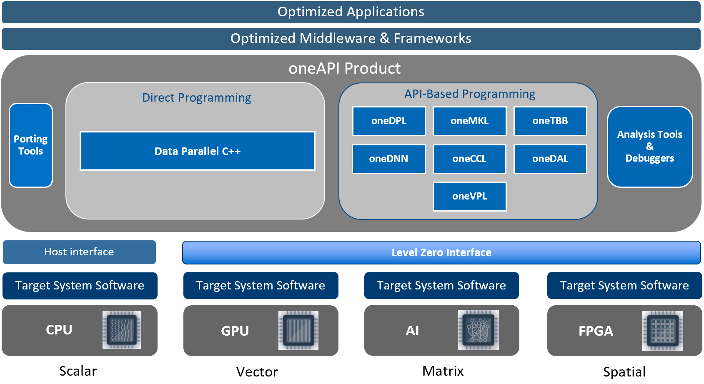

Introduction#
Objective#
The objective of the ‘oneAPI’ Level-Zero Application Programming Interface (API) is to provide direct-to-metal interfaces to offload accelerator devices. Its programming interface can be tailored to any device needs and can be adapted to support broader set of languages features such as function pointers, virtual functions, unified memory, and I/O capabilities.
Most applications should not require the additional control provided by the Level-Zero API. The Level-Zero API is intended for providing explicit controls needed by higher-level runtime APIs and libraries.
While initially influenced by other low-level APIs, such as OpenCL and Vulkan, the Level-Zero APIs are designed to evolve independently. While initially influenced by GPU architecture, the Level-Zero APIs are designed to be supportable across different compute device architectures, such as FPGAs and other types of accelerator architectures.
Core#
The Level-Zero core APIs provide the lowest-level, fine-grain and most explicit control over:
Device Discovery and Partitioning
Memory Allocation, Visibility and Caching
Kernel Execution and Scheduling
Peer-to-Peer Communication
Inter-Process Sharing
See the Core Programming Guide for more details.
Tools#
The Level-Zero tool APIs provide low-level access to device capabilities in order to support both direct application use and 3rd-party tools:
Metrics Discovery and Reporting
Kernel Profiling, Instrumentation and Debug
See the Tools Programming Guide for more details.
System Management#
The Level-Zero Sysman APIs provide in-band access to the following features for each accelerator device:
Query the performance, power and health of accelerator resources
Control the performance and power profile of accelerator resources
Maintenance facilities such as performing hardware diagnostics, updating firmware or resetting the device
By default, only administrator users have permissions to perform control operations on resources. Most queries are available to any user with the exception of those that could be used for side-channel attacks. The systems administrator can tighten/relax the default permissions.
See the Sysman Programming Guide for more details.
Fundamentals#
The following section provides fundamentals of the API design. For more detailed information, refer to the programming guides and detailed specification pages.
Header files can be found at: oneapi-src/level-zero
Terminology#
This specification uses key words based on RFC2119 to indicate requirement level. In particular, the following words are used to describe the actions of an implementation of this specification:
May - the word may, or the adjective optional, mean that conforming implementations are permitted to, but need not behave as described.
Should - the word should, or the adjective recommended, mean that there could be reasons for an implementations to deviate from the behavior described, but that such deviation should be avoided.
Must - the word must, or the term required or shall, mean that the behavior described is an absolute requirement of the specification.
Naming Convention#
The following naming conventions must be followed:
All functions must be prefixed with ze
All functions must use camel case zeObjectAction convention
All macros must use all caps ZE_NAME convention
All structures, enumerations and other types must follow ze_name_t snake case convention
All structure members and function parameters must use camel case convention
All enumerator values must use all caps ZE_ENUM_ETOR_NAME convention
All handle types must end with handle_t
All descriptor structures must end with desc_t
All property structures must end with properties_t
All flag enumerations must end with flags_t
The following coding conventions must be followed:
All descriptor structures must be derived from :ref:`ze-base-desc-t`
All property structures must be derived from :ref:`ze-base-properties-t`
All function input parameters must precede output parameters
All functions must return ze_result_t
Versioning#
There are multiple versions that should be used by the application to determine compatibility:
API Version - this is the version of the API supported by the device.
This is typically used to determine if the device supports the minimum set of APIs required by the application
There is a single 32-bit value that represents an entire collection of APIs
The value is encoded with 16-bit Major and 16-bit Minor parts
Major version increment consist of modified functionality, including deprecate features, and may break backwards-compatibility
Minor version increment consist of additional functionality, including promoted extensions, and must retain backwards-compatibility
The value is determined from calling zeDriverGetApiVersion
The value returned will be the minimum of the ze_api_version_t supported by the device and known by the driver
Driver Version - this is the version of the driver installed in the system.
This is typically used to mitigate driver implementation issues for a feature
The value encoding is vendor-specific but must be monotonically increasing
The value is determined from calling zeDriverGetProperties
Error Handling#
The following design philosophies are adopted in order to reduce Host-side overhead:
By default, the driver implementation may not perform parameter validation of any kind
This should be handled by validation layer(s)
By default, neither the driver nor device provide may provide any protection against the following:
Invalid API programming
Invalid function arguments
Function infinite loops or recursions
Synchronization primitive deadlocks
Non-visible memory access by the Host or device
Non-resident memory access by the device
The driver implementation is not required to perform API validation of any kind
The driver should ensure well-behaved applications are not burdened with the overhead needed for non-behaving applications
Unless otherwise specified, the driver behavior is undefined when APIs are improperly used
For debug purposes, API validation can be enabled via the loader’s validation layer(s)
All API functions return ze_result_t
This enumeration contains error codes for the Level-Zero APIs and validation layers
This allows for a consistent pattern on the application side for catching errors; especially when validation layer(s) are enabled
Multithreading and Concurrency#
The following design philosophies are adopted in order to maximize Host thread concurrency:
APIs are free-threaded when the driver’s object handle is different.
the driver should avoid thread-locks for these API calls
APIs are not thread-safe when the driver’s object handle is the same, except when explicitly noted.
the application must ensure multiple threads do not enter an API when the handle is the same
APIs are not thread-safe with other APIs that use the same driver’s object handle
the application must ensure multiple threads do not enter these APIs when the handle is the same
APIs do not support reference counting of handles.
the application must track ownership and explicitly free handles and memory
the application must ensure that all driver objects and memory are no longer in-use by the device before freeing; otherwise the Host or device may fault
no implicit garbage collection is supported by the driver
In general, the API is designed to be free-threaded rather than thread-safe. This provides multithreaded applications with complete control over both threading and locks. This also eliminates unnecessary driver overhead for single threaded applications and/or very low latency usages.
The exception to this rule is that all memory allocation APIs are thread-safe since they allocate from a single global memory pool. If an application needs lock-free memory allocation, then it could allocate a per-thread pool and implement its own sub-allocator.
An application is in direct control over all Host thread creation and usage. The driver should never implicitly create threads. If there is a need for an implementation to use a background thread, then that thread should be created and provided by the application.
Each API function must document details on the multithreading requirements for that call.
The primary usage-model enabled by these rules is:
multiple, simultaneous threads may operate on independent driver objects with no implicit thread-locks
driver object handles may be passed between and used by multiple threads with no implicit thread-locks
Application Binary Interface#
The Level-Zero C APIs are provided to applications by a shared import library. C/C++ applications must include “ze_api.h” and link with “ze_api.lib”. The Level-Zero C Device-Driver Interfaces (DDIs) are provided to the import library by the shared loader and driver libraries. C/C++ loaders and drivers must include “ze_ddi.h”.
The implementation of these libraries must use the default Application Binary Interface (ABI) of the standard C compiler for the platform. An ABI in this context means the size, alignment, and layout of C data types; the procedure calling convention; and the naming convention for shared library symbols corresponding to C functions. The ABI is backward-compatible for API minor version increments such as adding new functions, appending new enumerators, and using reserved bits in bitfields. ABI is not guaranteed to be backward-compatible for API major version increments such as modifying existing function signatures and structures, removing functions and structures, etc.
On platforms where Level-Zero is provided as a shared library, library symbols beginning with “ze”, “zet” or “zes” and followed by a digit or uppercase letter are reserved for use by the implementation. Applications which use Level-Zero must not provide definitions of these symbols. This allows the Level-Zero shared library to be updated with additional symbols for new API versions or extensions without causing symbol conflicts with existing applications.